料理・掃除・洗濯などの家事、買い物、家計を支えるためのアルバイト。

Young Carer
ヤングケアラー
とは
家族を大切に思うことと、自分の時間や未来を大切にすること。その両方が守られるために、まず知ることから。
ケアの内容は、一つとは限りません。
病気や障害、精神疾患、依存症などを抱える家族の身の回りの世話、幼いきょうだいの見守り、家族に代わる通訳や手続きなど、本来は大人が担う役割を担っていることがあります。
介護・看病、薬の管理、通院の付き添い、移動や身の回りの介助。
幼いきょうだいの育児や送迎、家族が不安定なときの見守り。
家族の話を聞き続けること、通訳、書類手続き、周囲への説明。
これらをしているから、すぐに「ヤングケアラー」と決めつけるのではありません。本人がどう感じ、生活にどんな影響があるかを丁寧に見る必要があります。
Impact
「がんばれている」ように見えても。
ケアの負担は、学校生活や友人関係、心身の健康、将来の選択へ静かに影響することがあります。
学び・進路
遅刻や欠席、集中できない、宿題の時間がない、進学先を家から通える範囲に限る。
友人・自分の時間
放課後や休日に出かけられない、家庭のことを話せず、人との距離ができる。
こころと身体
「自分がやらなければ」という緊張、睡眠不足、孤独感、将来への不安。
助けを求めにくい
家族を悪く思われたくない、ケアが当たり前になっているなど、声を上げにくいことがあります。